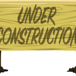

Hello world, this site is my first big one and I'm using it to practice what I've learn so far from The Odin Project. My very first project is to make a recipe using only HTML, this is so because HTML is all that I know so far. I've added a some extra stuff that's not really needed on the site like different type of images that may not be needed but I want to use everything I know so far so I going to put them on here.
So for my recipe's website I'm going to put my top 3 dishes that I made when I was vegan. I kind of stopped for personal reasons, not because it was unhealthy(it's the opposite actually), not because it was expensive, not because I'm too lazy(this is the most true reason but it's not why I stopped). I'm stop for reasons that I kind of don't want to get into now, especially since this site is public and I don't really want to explain myself and start fights with strangers online.
Anywho I still think veganism is great and have a really good strong argument, also the diet is soo good for the person it helps with lower blood pressure and cholestrol, which both really good things since the leading cause of death like heart disease I think. It also with weight loss, lowers chance of cancer and other things. So I'm definetely going to get back into it, because I think it's the best diet to adopt, everyone benefits, the animals, the environment and the people. If you're going to make a stance then I think this diet is the best one. If you're going to give up meat and stuff milk, cheese and eggs should be easy. It was for me but that's because I don't really like dairy. So umm here are my favorite recipes they're soo good I swear, and they're easy to make. I'm super lazy if I can make these things bro I'm telling you, you can too. And they cost that much to make.
